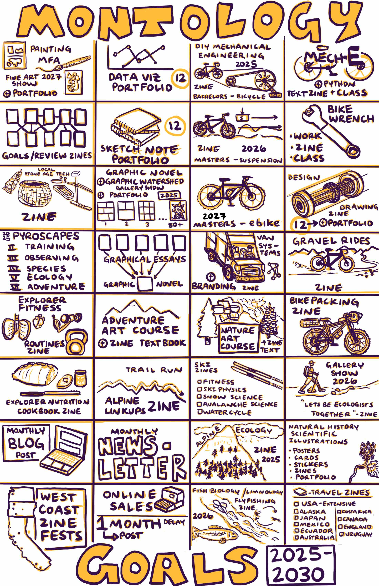

5 Year Goals

UPDATE:
December 2024. I made a new version of this 5 year vision/goal map. I completed a few items on the previous one, did some serious personal growth this year, and refined some of the projects more. The basic structure holds, but I have added some more details on some projects.
TL;DR The short end is I have designed a 5 year learning curriculum that will challenge me across multiple domains: art, storytelling, writing, mechanical engineering, data visualization, ecology, social, and entrepreneurial.
I have a fairly customized way of approaching goals. They fall into one of four categories: MAKE, LIVE, THINK, or EXPLORE. I like to set very ambitious goals and revisit them every year or so. I made this illustration earlier this year (January 2024). The basic idea is to make smaller learning projects across these categories, read, sketchnote or write about them, turn that into blog posts, and then turn those into printed zines. There is nothing that says “done” like a physical version of a project in your hands. I honestly do not care if other people see them. These are all things that interest me. Sharing is a secondary thing to have learned and completed the project. I hope that others learn from them as well or at least get inspired to do their own ambitious learning projects.
My original journal entry from January 2024 lightly edited to fit this blog format.
I was chatting with Jack about how I was having a great time working through each of my comics production books for this month’s skillathon activities and how I might just work through the rest of my art book library in the coming years in a similar manor. Spend a set amount of time with each book, do exercises, make sketchnotes and then move onto another book. Jack said if I (re)worked through all ~100 art books in this way then I would essentially have a DIY MFA. Something gelled with this idea seed. Why stop there? Why not work towards “DIY masters” degrees in all the things I am interested in as an extension the skillathon… going even deeper on topics. At the same time, Caryn and I have been working on updating our 5 year goals for 2024-2028 or where do we want to be (besides where we are…ha!) on Jan 1, 2029? Obviously things will not turn out like how I plan, but I might as well think through it as an exercise.
While the general direction outlined in 2021 is still the same general direction as I have now, I add many more details and some clarity about how to integrate different components through blogging, zines, exploration and art learning.
MAKE
Drawing - There is not an exact definition to this but continue moving towards Level 7 (mostly reference, some imagination)- then onto level 8 (concept artist level, mixture reference imagination).
Overlapping DIY MFA Cluster:
- DIY Illustration MFA - fundamentals + accurate imagination drawing
- DIY Painting MFA - focus on color and color theory
- DIY Design Drawing MFA - Design Sketching of my bicycles, their components, how the components work individually and as sub-systems.
- Natural History Scientific Illustration - There are graduate certificates for this - so I just stole the curriculum
The zine series I am focusing on now as my main catch all for learning, art, writing, exploration and data visualization is called Montology - the study of mountains and culture. If I stick to the schedule, 20 issues in 5 years of creative and integrated learning products. Check out the zines here: Montology Studios.
Along the way for the Montology issues I will be publishing increasingly longer comics stories working up to an ~80 pager graphic novel. This is a masters level project so lets throw in another DIY MFA there as well.
We have a three year lease (through 2026) for our gallery/classroom/studio space (with option to extend). I plan on putting together a large gallery show called Graphic Watershed with all the original artwork I do for the zines and other learning projects. Darmera Studios.
LIVE
This entire section is planned out through discussions with Caryn. We are first and foremost always going to prioritize growth in our relationship and putting in the joyful work on our relationship with a focus on continually getting better at communication.
We also are doubling down on the local community. We want to expand our dinner parties to outdoor events where we sit around a large viking table and continue being frequent pillars of our sub-community. This includes designing more outdoor cooking spaces with a wood-fire oven for pizza with wild foraged mushrooms and other toppings as well as sourdough the next day.
Caryn and I have wanted to do a bit of international travel since we started dating (we consider Alaska international…because it basically is haha). We have opted for more adventure travel in the van, especially since the pandemic. We had planned on visiting Caryn’s parents in Australia and then slow traveling New Zealand starting in November of 2020, but we all know why those plans changed. In the next few years we would like to get back there and Alaska (my Uncle and Aunt + Jack’s family). A shorter trip that would focus on the cultural history of Mexico and cooking classes would be to Mexico City. We still like wild places and if opportunities come up with multiple goal alignment for Patagonia or Iceland we will take them.
I have done a lot of travel throughout my scientific career and for adventures. In a similar way to making new zines on topics I am learning about, I want to also make smaller travel zines/illustrations revisiting photos and journal entries from past trips. Here is a general list of trips I have yet to reflect on in that way. This also includes thinking about how to make some of the meals that I had while traveling to make a retrospective cookbook.
As we spend more time and seasons traveling in the van and in our home, we continually discover little nuances of how they work as systems. Indeed, as we change as people and interact with these forms of housing their meaning is likely to change because our context has changed. Document it for further reflection!
THINK
The science journalism/writing masters degree from MIT is pretty straight forward in the number of pieces you will produce during the program. This is more or less equivalent to a year of the main articles I write for the Montology zines and on my planned in-depth blog posts. I wrote about this a few times in my journal above.
The most technically demanding subjects I want to learn is the equivalent of an undergraduate and masters degree in mechanical engineering, but focusing on bicycles and suspension. I am putting together the curriculum right now. This will be more along the lines of Scott Young’s Ultralearning project for Computer Science, but not nearly as compressed in time and focusing on the mechanical engineering topics around bicycles only. In addition to sketchnotes and at least a yearly zine focused on bikes, it would be cool to try designing a bike and some components in CAD and do some finite element analysis using some of the open-source programs. I am always open to suggestions here from the various ERE engineers, but this project is more for knowledge of how this all works and how to appropriately model the static and dynamic forces on components. This also ties into the Design Drawing of all my bicycles and their components.
Building on the human anatomy and physiology classes I took as undergrad electives, I would like to learn even more about exercise physiology and human Kinetics. This ties into the engineering classes above, but from the human side of the system. This project will focus around coding up the models found in the book Biomechanics and Exercise Physiology Quantitative Modeling by Arthur Johnson.
I now have two art businesses. An adventure art business that will be making all the content that goes into the Montology Zines (Biz 2) as well as a gallery/classroom/studio business (Biz 1). I am optimistic that through ramping up the commissions, selling zines, and selling original art I can get all of my art related expenses fully covered in a few months. In 5 years this business should fully cover all of my expenses. The Adventure Art business rents space from the gallery/studio business. I will teach environmental and nature based art/science classes and retreats through Biz 1. I want to continue to learn more depth on fish biology and river ecosystems as well as ecology specific to alpine environments. Once again I will learn all this, sketch note it, write it up and turn it into content for the Montology series.
EXPLORE
A consistent theme of Montology is fly-fishing and exploring different watersheds for this purpose. We have three watersheds within human powered distance. I would like to fish all the major and three of the minor tributaries to each river. I will continue to explore these watersheds via bikepacking, backpacking, trail running, or skiing.
- Bikepacking - 1 trip per year minimum
- Backpacking - revisit watershed where Sharon’s ashes are scattered once a year
- Trail Running- Complete our range traverse project with trail running friend
In 5 years I want to be an even better local naturalist. I have various endemic species lists from my friend on iNaturalist to go out and see if I can find IRL Pokemon! I also have some coordinates of various archeological sites to go visit and take it all in. One of my non-fiction writing inspirations is Craig Childs. This is what he does. All of these skills feed into taking art retreat clients out during various seasons for learning about the local environment and being a better plein air instructor.
And there you have it. A 5 year vision (goal map) that leverages current skills and interests to go even deeper on some topics, learn new ones, and maintain the best of what I already have going on. After this exercise, it is beginning to feel like this is just one single project.